可視化(part 2)#
近年、SeabornやPlotlyなどmatplotlibの機能を補完するような形態のライブラリ拡張するために広く利用されています。これらのライブラリはデータの可視化をより直感的かつ簡単に行うためのツールを提供しており、matplotlib単体では実現しにくい高度なグラフィックやインタラクティブなプロットを作成することが可能です。
Seaborn#
Seabornはmatplotlibの上に構築されているデータ可視化ライブラリで、複雑なグラフを簡単に作成するための高レベルのインターフェースを提供します。
散布図、棒グラフ、ヒートマップ、箱ひげ図、バイオリンプロット、ペアプロットなど、多様なプロットタイプをサポートしています。
データフレームとの親和性が高く、データセットの操作やフィルタリング、グループ化などが容易に行えます。
統計的なデータ可視化を簡単に行えるように設計されて、統計的なデータ集約や要約を自動的に行う機能を持っています。
#!pip install seaborn
基本的な使い方#
Seabornはmatplotlibを補完するものなので、よくこの２つをセットで使います。
#import scienceplots
import matplotlib.pyplot as plt
from matplotlib import font_manager
#plt.style.use(['science','no-latex'])
# Path to your TTF file
ttf_path = './Noto_Sans_JP/NotoSansJP-VariableFont_wght.ttf'
# Register the font
font_manager.fontManager.addfont(ttf_path)
custom_font = font_manager.FontProperties(fname=ttf_path)
# Set the custom font as default
plt.rcParams['font.family'] = custom_font.get_name()
plt.rcParams['font.family'] = 'Hiragino Sans'
---------------------------------------------------------------------------
AttributeError Traceback (most recent call last)
Cell In[2], line 2
1 #import scienceplots
----> 2 import matplotlib.pyplot as plt
3 from matplotlib import font_manager
4 #plt.style.use(['science','no-latex'])
5 # Path to your TTF file
File ~/opt/anaconda3/envs/jupyterbook_1/lib/python3.9/site-packages/matplotlib/pyplot.py:2500
2498 dict.__setitem__(rcParams, "backend", rcsetup._auto_backend_sentinel)
2499 # Set up the backend.
-> 2500 switch_backend(rcParams["backend"])
2502 # Just to be safe. Interactive mode can be turned on without
2503 # calling `plt.ion()` so register it again here.
2504 # This is safe because multiple calls to `install_repl_displayhook`
2505 # are no-ops and the registered function respect `mpl.is_interactive()`
2506 # to determine if they should trigger a draw.
2507 install_repl_displayhook()
File ~/opt/anaconda3/envs/jupyterbook_1/lib/python3.9/site-packages/matplotlib/pyplot.py:277, in switch_backend(newbackend)
270 # Backends are implemented as modules, but "inherit" default method
271 # implementations from backend_bases._Backend. This is achieved by
272 # creating a "class" that inherits from backend_bases._Backend and whose
273 # body is filled with the module's globals.
275 backend_name = cbook._backend_module_name(newbackend)
--> 277 class backend_mod(matplotlib.backend_bases._Backend):
278 locals().update(vars(importlib.import_module(backend_name)))
280 required_framework = _get_required_interactive_framework(backend_mod)
File ~/opt/anaconda3/envs/jupyterbook_1/lib/python3.9/site-packages/matplotlib/pyplot.py:278, in switch_backend.<locals>.backend_mod()
277 class backend_mod(matplotlib.backend_bases._Backend):
--> 278 locals().update(vars(importlib.import_module(backend_name)))
File ~/opt/anaconda3/envs/jupyterbook_1/lib/python3.9/importlib/__init__.py:127, in import_module(name, package)
125 break
126 level += 1
--> 127 return _bootstrap._gcd_import(name[level:], package, level)
File ~/opt/anaconda3/envs/jupyterbook_1/lib/python3.9/site-packages/matplotlib_inline/__init__.py:1
----> 1 from . import backend_inline, config # noqa
3 __version__ = "0.2.1"
5 # we can't ''.join(...) otherwise finding the version number at build time requires
6 # import which introduces IPython and matplotlib at build time, and thus circular
7 # dependencies.
File ~/opt/anaconda3/envs/jupyterbook_1/lib/python3.9/site-packages/matplotlib_inline/backend_inline.py:236
231 ip.events.unregister("post_run_cell", configure_once)
233 ip.events.register("post_run_cell", configure_once)
--> 236 _enable_matplotlib_integration()
239 def _fetch_figure_metadata(fig):
240 """Get some metadata to help with displaying a figure."""
File ~/opt/anaconda3/envs/jupyterbook_1/lib/python3.9/site-packages/matplotlib_inline/backend_inline.py:215, in _enable_matplotlib_integration()
211 ip = get_ipython()
213 import matplotlib
--> 215 if matplotlib.__version_info__ >= (3, 10):
216 backend = matplotlib.get_backend(auto_select=False)
217 else:
AttributeError: module 'matplotlib' has no attribute '__version_info__'
import pandas as pd
import seaborn as sns
df=pd.read_csv("https://raw.githubusercontent.com/lvzeyu/css_tohoku/master/css_tohoku/draft/Data/titanic.csv")
plt.figure(figsize=(6, 4))
ax=sns.histplot(
data=df,
x="age",
kde=True,# カーネル密度推定
hue="sex",
multiple="dodge", # “layer”, “dodge”, “stack”, “fill”
palette={"male": "blue", "female": "red"},
)
ax.set_xlabel("年齢(歳)",fontsize=14)
ax.set_ylabel("人数",fontsize=14)
ax.legend(title="性別", title_fontsize='13', loc='upper right',labels=['男性', '女性'])
plt.show()
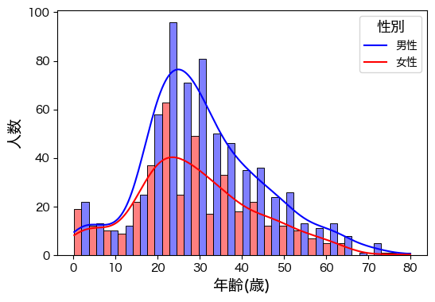
カテゴリ別のプロット#
plt.figure(figsize=(6, 4))
sns.boxplot(data=df, x="embarked", y="age", hue="survived",width=.5)
plt.show()
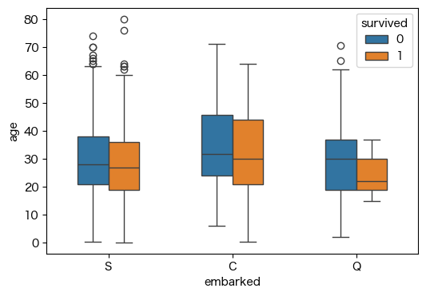
plt.figure(figsize=(6, 4))
ax=sns.boxplot(
data=df, x="age", y="embarked",
notch=True, showcaps=False,
flierprops={"marker": "x"},
boxprops={"facecolor": (.3, .5, .7, .5)},
medianprops={"color": "black", "linewidth": 2},
)
plt.show()
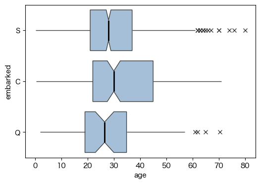
tips = sns.load_dataset("tips")
sns.scatterplot(data=tips, x="total_bill", y="tip", hue="size", size="size",style="time")
<Axes: xlabel='total_bill', ylabel='tip'>
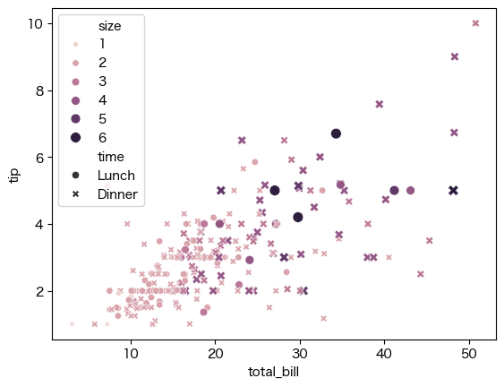
回帰直線#
tips = sns.load_dataset("tips")
sns.lmplot(x="total_bill", y="tip", hue="smoker", data=tips,
markers=["o", "x"], palette="Set1")
<seaborn.axisgrid.FacetGrid at 0x2a498c980>
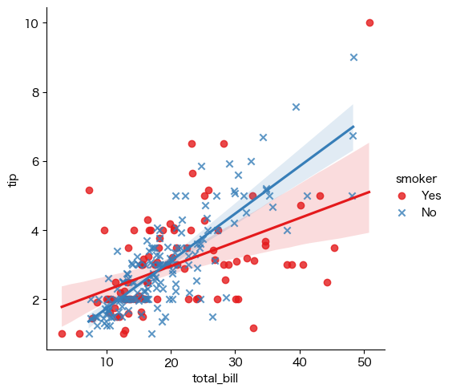
plt.figure(figsize=(6, 6))
sns.lmplot(x="total_bill", y="tip", hue="smoker",
col="time", row="sex", data=tips)
plt.show()
<Figure size 600x600 with 0 Axes>
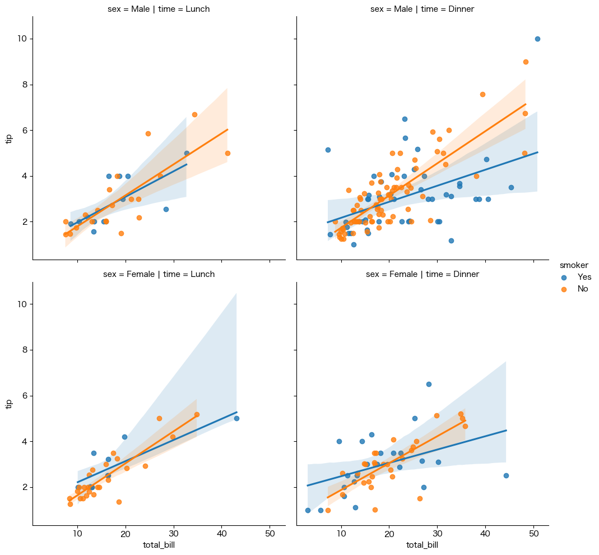
plt.figure(figsize=(6, 4))
ax=sns.jointplot(x="total_bill", y="tip", data=tips, kind="reg")
plt.show()
<Figure size 600x400 with 0 Axes>
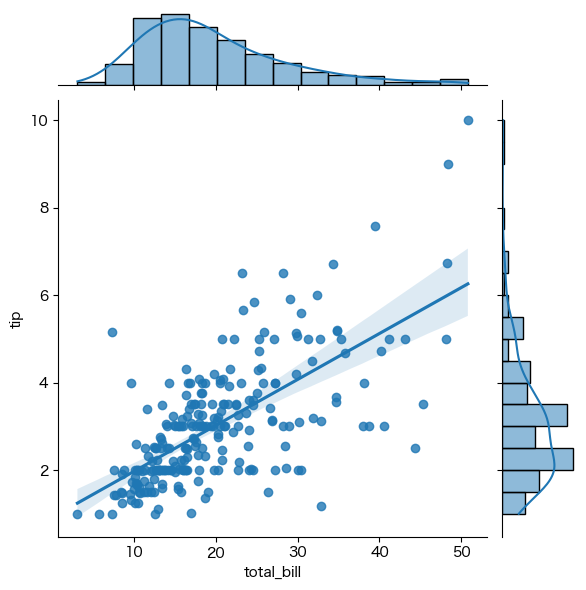
ヒートマップ#
# 航空機のデータを読み込み
flights_long = sns.load_dataset("flights")
# ピボットを生成
flights = (
flights_long
.pivot(index="month", columns="year", values="passengers")
)
# Draw a heatmap with the numeric values in each cell
f, ax = plt.subplots(figsize=(9, 6))
sns.heatmap(flights, annot=True, fmt="d", linewidths=.5, ax=ax)
<Axes: xlabel='year', ylabel='month'>
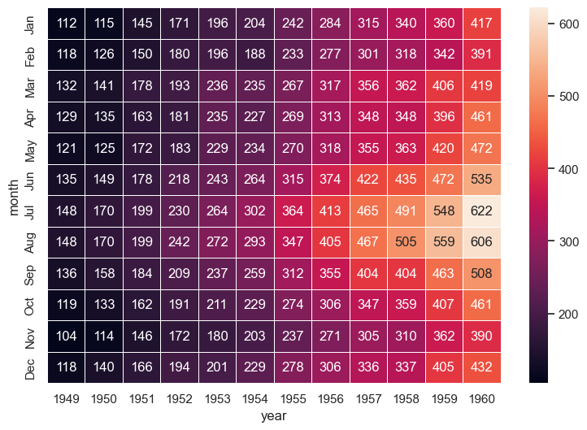
相関関係の可視化#
penguins = sns.load_dataset("penguins")
sns.pairplot(penguins, hue="species")
<seaborn.axisgrid.PairGrid at 0x2a5c9b3b0>
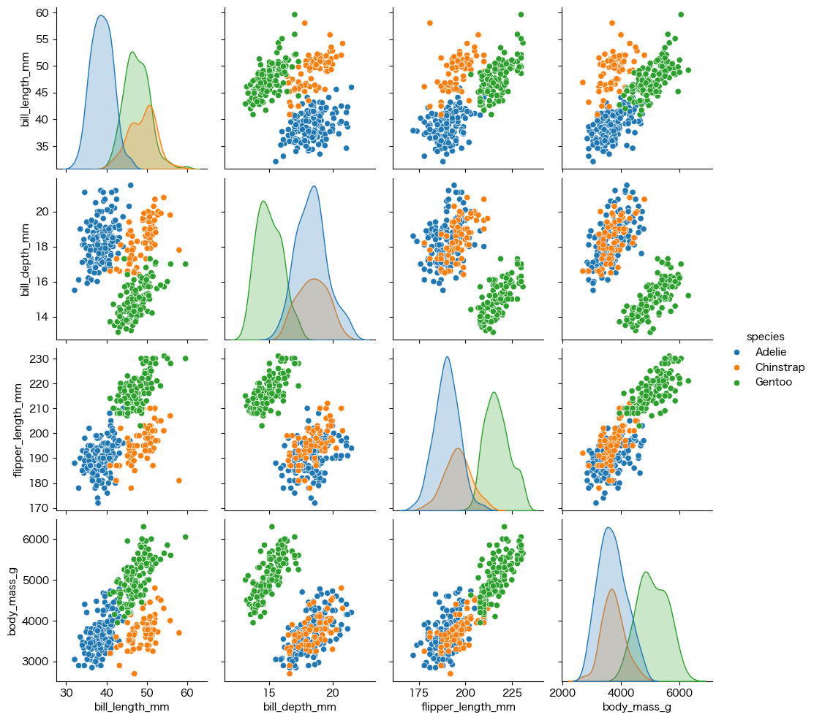
Plotly#
Plotlyは、インタラクティブなグラフを作成するための強力なオープンソースのライブラリです。動的でインタラクティブなグラフを生成できるため、データの視覚化をより深く、豊かに表現することができます。
#!pip install plotly
Collecting plotly
Downloading plotly-5.22.0-py3-none-any.whl.metadata (7.1 kB)
Requirement already satisfied: tenacity>=6.2.0 in /Users/ryozawau/anaconda3/envs/jupyterbook/lib/python3.12/site-packages (from plotly) (8.2.3)
Requirement already satisfied: packaging in /Users/ryozawau/anaconda3/envs/jupyterbook/lib/python3.12/site-packages (from plotly) (23.2)
Downloading plotly-5.22.0-py3-none-any.whl (16.4 MB)
━━━━━━━━━━━━━━━━━━━━━━━━━━━━━━━━━━━━━━━━ 16.4/16.4 MB 100.7 MB/s eta 0:00:00a 0:00:01
?25hInstalling collected packages: plotly
Successfully installed plotly-5.22.0
[notice] A new release of pip is available: 24.0 -> 24.1.2
[notice] To update, run: pip install --upgrade pip
import plotly.express as px
df = px.data.iris()
fig = px.scatter(df, x="sepal_width", y="sepal_length", color="species",
size='petal_length', hover_data=['petal_width'])
fig.show()
Plotlyのモジュール#
Plotlyにはplotly.graph_objectsとplotly.expressという2つの主要なモジュールがあります。
plotly.graph_objects: より細かい制御やカスタマイズが可能です。グラフの構成要素を個別に設定したり、複雑なグラフを作成する際に使います。plotly.express: 高レベルな関数でグラフを作成できます。より簡単に、少ないコードでシンプルなグラフを作成するのに適しています。
import pandas as pd
df = pd.DataFrame({
"Fruit": ["Apples", "Oranges", "Bananas", "Apples", "Oranges", "Bananas"],
"Contestant": ["Alex", "Alex", "Alex", "Jordan", "Jordan", "Jordan"],
"Number Eaten": [2, 1, 3, 1, 3, 2],
})
import plotly.express as px
fig = px.bar(df, x="Fruit", y="Number Eaten", color="Contestant", barmode="group")
fig.show()
import plotly.graph_objects as go
fig = go.Figure()
for contestant, group in df.groupby("Contestant"):
fig.add_trace(go.Bar(x=group["Fruit"], y=group["Number Eaten"], name=contestant,
hovertemplate="Contestant=%s<br>Fruit=%%{x}<br>Number Eaten=%%{y}<extra></extra>"% contestant))
fig.update_layout(legend_title_text = "Contestant")
fig.update_xaxes(title_text="Fruit")
fig.update_yaxes(title_text="Number Eaten")
fig.show()
基本的な使い方#
plotly.expressで基本的な図を描画しますfig.update_でレイアウトなどを細かく設定します
iris = sns.load_dataset('iris')
fig = px.histogram(iris, x='sepal_length', color='species',
nbins=19, range_x=[4,8], width=600, height=350,
opacity=0.4, marginal='box')
# histogram描画時にrange_yを指定すると、marginalのboxplotの描画位置が崩れる
fig.update_layout(barmode='overlay')
fig.update_yaxes(range=[0,20],row=1, col=1)
# htmlで保存、以後は省略
# fig.write_html('histogram_with_boxplot.html', auto_open=False)
補足: SeabornとMatplotlibの違いと併用#
Matplotlib
高い柔軟性を持つため、カスタマイズの幅が非常に広いですが、コードがやや複雑になることがあります
Seaborn
Matplotlibを基盤として構築された高レベルのデータ可視化ライブラリであり、複雑なプロットも簡単に作成できます (基本的なカスタマイズは可能だが、柔軟性はやや限定的)
SeabornとMatplotlibの違い#
データフレームの扱い#
import pandas as pd
df = pd.DataFrame({
'group': ['A', 'A', 'B', 'B', 'C', 'C'],
'category': ['X', 'Y', 'X', 'Y', 'X', 'Y'],
'value': [10, 15, 7, 12, 5, 9]
})
import seaborn as sns
sns.barplot(data=df, x="category", y="value", hue="group")
plt.title("Seaborn: Grouped Barplot by 'group'")
plt.show()
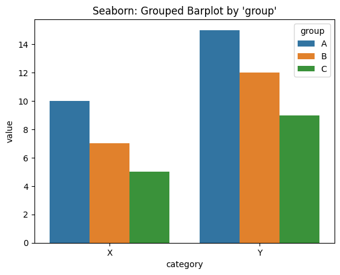
import numpy as np
# uniqueなカテゴリとグループを取得
categories = df['category'].unique()
groups = df['group'].unique()
# 棒の位置調整
x = np.arange(len(categories))
width = 0.25
fig, ax = plt.subplots()
# 各groupごとに描画
for i, group in enumerate(groups):
values = df[df['group'] == group].sort_values('category')['value']
ax.bar(x + i * width, values, width=width, label=group)
ax.set_xticks(x + width)
ax.set_xticklabels(categories)
ax.set_title("Matplotlib: Grouped Barplot by 'group'")
ax.legend(title="Group")
plt.show()
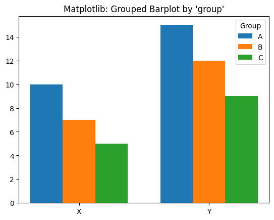
統計的プロット#
tips = sns.load_dataset("tips")
sns.regplot(data=tips, x="total_bill", y="tip")
plt.title("Seaborn")
plt.show()
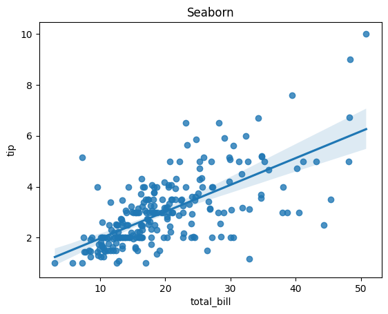
# x, y の抽出
x = tips["total_bill"].values
y = tips["tip"].values
# 線形回帰の係数（NumPyで最小二乗法）
a, b = np.polyfit(x, y, deg=1) # y = ax + b
# 散布図と回帰直線の描画
plt.scatter(x, y, label="Data")
plt.plot(x, a * x + b, color="red", label=f"y = {a:.2f}x + {b:.2f}")
plt.title("Matplotlib")
plt.xlabel("Total Bill")
plt.ylabel("Tip")
plt.legend()
plt.show()
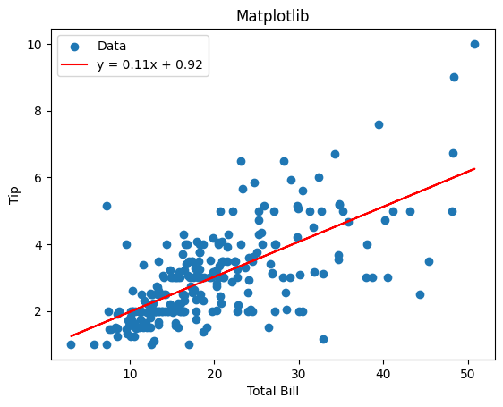
SeabornとMatplotlibの併用#
# データの読み込み
tips = sns.load_dataset("tips")
# Seabornで描画しつつAxesオブジェクトを取得
ax = sns.scatterplot(data=tips, x="total_bill", y="tip")
# Matplotlibで細かく調整
ax.set_title("Tip vs Total Bill", fontsize=16)
ax.axhline(y=5, color='red', linestyle='--', label="Y=5 Line")
ax.annotate("Here", xy=(30, 5), xytext=(25, 7),
arrowprops=dict(arrowstyle="->", color='gray'))
ax.legend()
plt.show()
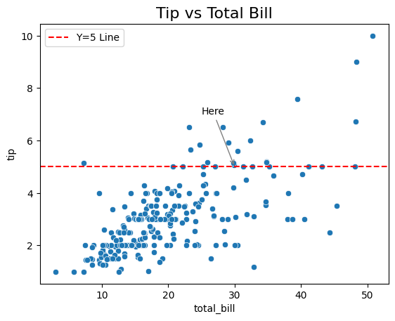
fig, axes = plt.subplots(1, 2, figsize=(12, 5))
# 左：箱ひげ図
sns.boxplot(data=tips, x="day", y="tip", ax=axes[0])
axes[0].set_title("Boxplot")
# 右：回帰線付き散布図
sns.regplot(data=tips, x="total_bill", y="tip", ax=axes[1])
axes[1].set_title("Regression Plot")
plt.tight_layout()
plt.show()
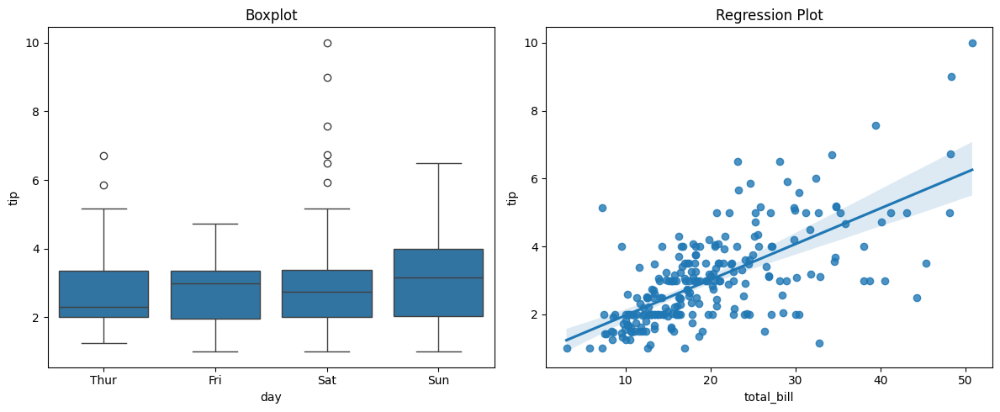